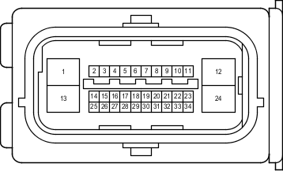

Код детали
A6
Каталожный номер
90980-12686
Цвет
Черный
Технические характеристики
Жгуты проводов для ремонта

Система
Система полного привода
АБС (для моделей с 2TR-FE, 5L-E)
Аудиосистема (9-канальная, для моделей без системы навигации)
Аудиосистема (для моделей с системой навигации)
Щиток приборов (для моделей с левосторонним рулевым управлением)
DLC3
Индикатор ECT и A/T (для моделей с 2TR-FE)
Система управления двигателем (для моделей с 2TR-FE)
Механизм открывания защелки стекла
Монитор "Multi-Terrain" (для моделей с системой навигации)
Мультиплексная система передачи данных (CAN, для моделей с левосторонним рулевым управлением)
Система навигации
Система помощи при парковке (монитор помощи при парковке / монитор заднего вида и монитор переднего и бокового вида с широкими углами обзора) (для моделей с системой навигации)
Система помощи при парковке (сенсорная система помощи при парковке TOYOTA) (с 4 датчиками)
Система помощи при парковке (сенсорная система помощи при парковке TOYOTA) (с 8 датчиками, для моделей с системой навигации)
Рулевое управление с усилителем
Блокировка заднего дифференциала
Система предупреждения о непристегнутом ремне безопасности
Стоп-сигналы
TRC (для моделей с 2TR-FE)
VSC (для моделей с 2TR-FE)